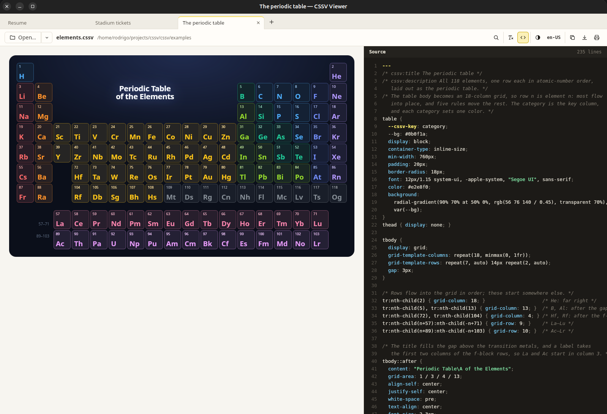
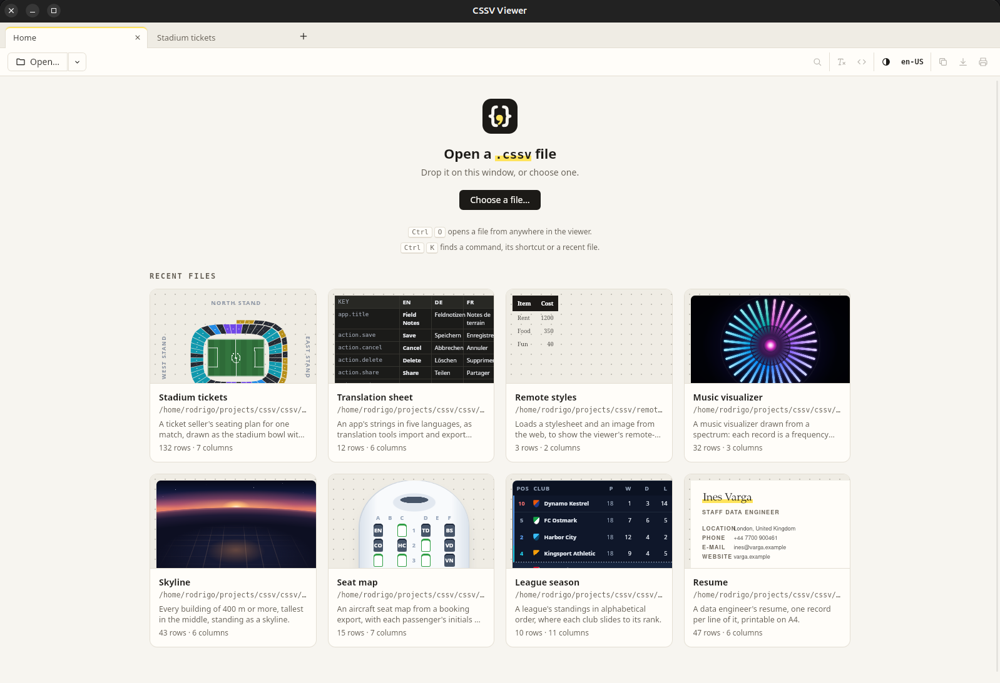

Tabs
A tab for each file, named after its cssv:title. A file you open from the file manager joins the window that's already open.
CSSV Viewer · Desktop app
CSSV Viewer shows a .cssv file as the styled table it describes, rendered by the same <cssv-table> as this website. Open files from your file manager, keep them in tabs, and edit them in your own editor: each save updates the table in place.

elements.cssv in a tab, with the Source pane open beside it. The tab is named after the file's cssv:title.What it does
The viewer never changes your file. Write it in any editor, or have a script or a language model write it, and the viewer shows the result each time the file is saved.
A tab for each file, named after its cssv:title. A file you open from the file manager joins the window that's already open.
Save the file and its table updates in place, in background tabs too. The scroll position and the rows that didn't change stay.
Searches the values as the file holds them, so 1234.5 finds the cell that shows 1,234.50.
See the data without its style block, or the file's text beside the table. Problems the renderer reports are listed with their section of the spec and, where it's known, a link to their line.
Copy cells for a spreadsheet, the table as Markdown or the data as CSV. Save a picture as PNG, or as SVG, which keeps its animations.
A preview with the file's own @media print rules, then the paper, orientation and scale. Print to paper or to a PDF.
Follow the system or pick a theme, and the table's prefers-color-scheme rules follow. Show numbers in another language to see a file as readers elsewhere will.
Ctrl K finds any command or recent file. Tabs have the shortcuts a browser has, from Ctrl T to Ctrl Shift T.
A file loads only files from its own folder. Remote stylesheets, fonts and images wait until you allow them, once or always for that file.

Download and install
Each release is built by GitHub Actions from its tagged source (release notes). The macOS and Windows builds aren't signed with a developer certificate yet, so both systems ask you to confirm the first start: the notes with each file say how.
64-bit Intel and AMD (x86_64)
Make the file executable and start it. In most file managers, the file's Properties can also allow it to run as a program.
chmod +x CSSV-Viewer-x86_64.AppImage
./CSSV-Viewer-x86_64.AppImageAn AppImage registers nothing by itself, so the viewer's home offers Set up: it adds the viewer to your applications and makes it the app for .cssv files, all inside your home folder. If you move the AppImage, its next start updates that. ▾ → Stop opening .cssv files with CSSV Viewer removes it all; then delete the file.
If it doesn't start and says FUSE is missing, install your distribution's fuse3 package, or start it with --appimage-extract-and-run.
sudo apt install ./CSSV-Viewer-amd64.debapt installs WebKitGTK and GTK too if they're missing. The package registers .cssv files, so they open in the viewer. Remove it with sudo apt remove cssv-viewer.
sudo dnf install ./CSSV-Viewer-x86_64.rpmOn openSUSE, use sudo zypper install with the same file. The package registers .cssv files, so they open in the viewer. Remove it with sudo dnf remove cssv-viewer.
Apple silicon and Intel
Open the .dmg and drag CSSV Viewer to Applications.
The app isn't notarized by Apple yet, so macOS stops its first start. Open System Settings → Privacy & Security, scroll to Security, and click Open Anyway next to the message about CSSV Viewer. On macOS 14 and earlier, Control-clicking the app in Applications and choosing Open does the same.
If macOS says the app “is damaged and can't be opened”, that's how it treats a downloaded app without a signature. Removing the download's quarantine flag lets it start:
xattr -dr com.apple.quarantine "/Applications/CSSV Viewer.app"Once it has started, Finder offers it for .cssv files; to make it their app, choose a file's Get Info, pick it under Open with, and click Change All…. To remove it, move it from Applications to the Trash.
Windows 10 and 11, 64-bit
Run it and follow its steps. It adds the viewer to the Start menu and registers it for .cssv files, so Windows offers it when you open one. The viewer needs the Microsoft Edge WebView2 Runtime, which Windows 11 and an up-to-date Windows 10 already have; if it's missing, the installer downloads it.
The installer isn't signed yet, so SmartScreen may say “Windows protected your PC”. Click More info, then Run anyway.
To install it without questions, from a prompt run as administrator:
msiexec /i CSSV-Viewer-Windows.msi /qnTo remove either, open the menu next to CSSV Viewer in Settings → Apps → Installed apps and choose Uninstall.
CSSV Viewer is free software under the MIT license, provided as is, without warranty of any kind.
The viewer doesn't update itself: new versions appear here and on the releases page, which keeps every version's files. To build it yourself, see Run it in its README.